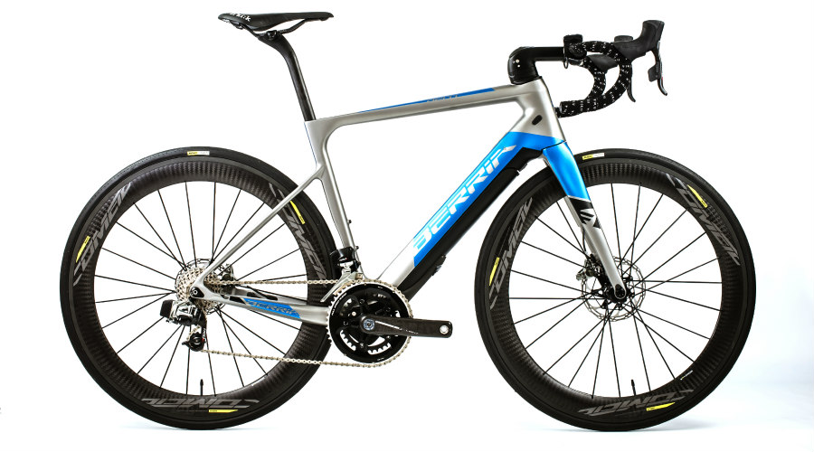
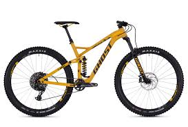
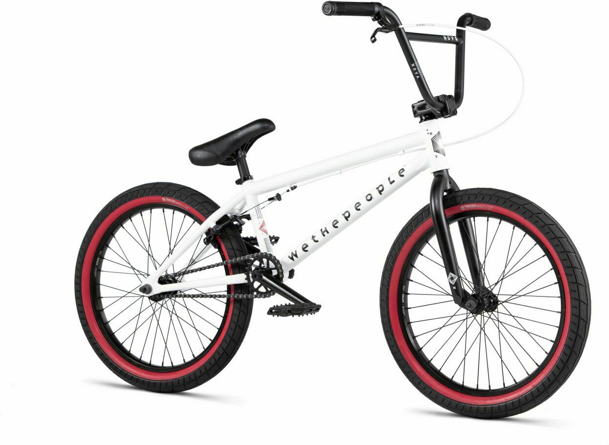
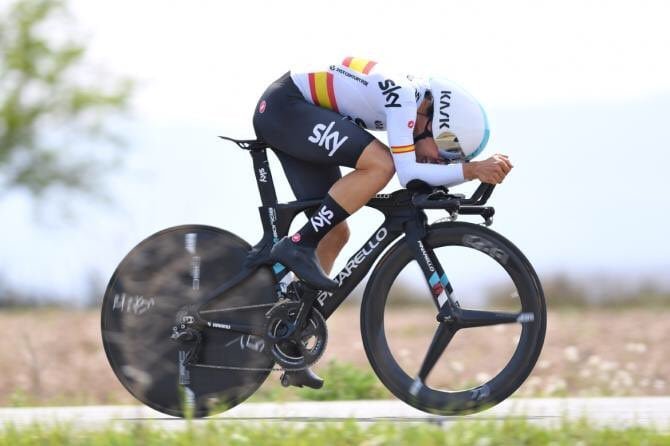

Tipos de bicicletas
| NOMBRE | DESCRIPCIÓN | IMAGEN |
|---|
| Carretera |
Ligeras, para ahorrar peso en las subidas, las bicicletas de carretera están entre las más habituales entre quienes practican el ciclismo y son, por supuesto, la principal herramienta de trabajo de los profesionales que corren las principales carreras del panorama internacional. |
 |
| NOMBRE | DESCRIPCIÓN | IMAGEN |
|---|
| Montaña |
Su cuadro es robusto, muchas veces fabricado en acero, y más ancho que el de las bicis de carretera, lo que les confiere estabilidad pero las hace más pesadas. Montan ruedas gruesas, normalmente guarnecidas con tacos para mejorar el agarre en cualquier terreno. |
 |
| NOMBRE | DESCRIPCIÓN | IMAGEN |
|---|
| BMX |
Las bicis para acrobacias urbanas tienen habitualmente un solo piñón y en muchas ocasiones es fijo, esto es, que mientras la rueda trasera avance los pedales se moverán siempre. |
 |
| NOMBRE | DESCRIPCIÓN | IMAGEN |
|---|
| Contrarreloj |
Cuentan con un ligerísimo cuadro que ofrece la mínima resistencia al aire, ruedas finas habitualmente montadas sobre llantas con radios de carbono y un manillar característico en forma de cuernos. |
 |